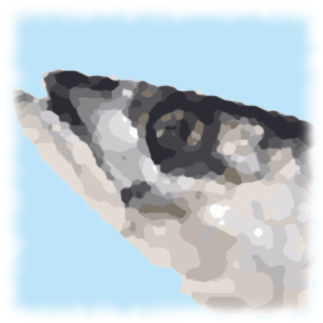

Maquerau
Drag and drop following links to your bookmarks bar then just click them on any site.
- Start a record session.
- Stop a record session and prompt you for a session name.
- Replay the last macro played or recorded.
- Display a list of recorded macro for the page your visiting.
- Change the default waiting time before retrying a missed click (default to 350ms). Reset the setting by setting a blank or 0 value in the prompt.
